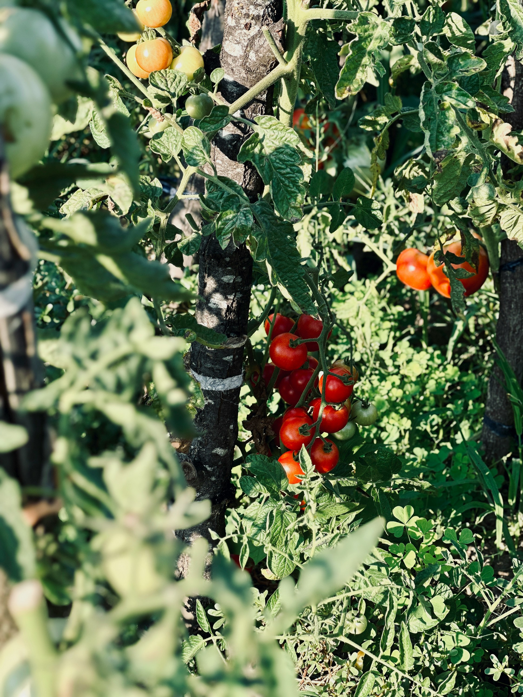
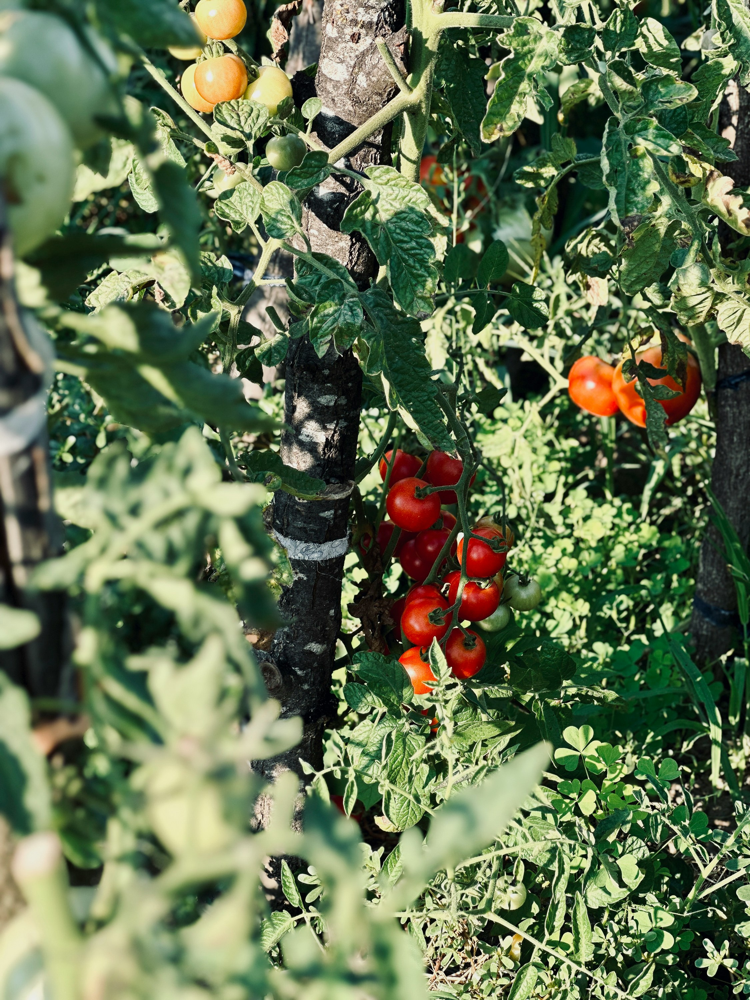

Toni opened this place in 1972 with a wood-fired oven, a few folding chairs, and dough that took two days to ferment.
He believed in simple things done right.
He sourced tomatoes from the farm outside town and mozzarella from a neighbor who made it fresh.
People came in for the pizza but stayed because they felt welcome.
 

Three generations later, we still do it the same way. The dough rests for 48 hours.
The sauce is made each morning. We chop vegetables and grate cheese by hand.
Every ingredient we use is local, seasonal, and grown without chemicals. We don’t cut corners.
We don’t freeze anything. We bake everything fresh, every day.
We’re still in the same spot. The oven has been replaced, but not the spirit.
Some of our regulars have been coming here since they were kids. Now they bring their kids.
Toni’s has always been more than a pizzeria. It’s a meeting point.
A place where the neighborhood gathers, talks, and celebrates.


- We host small events.
- We welcome everyone.
- No dress code.
- No reservations.
- Just good food and open doors.
If you're nearby, come in. You’ll smell the crust before you see the sign.